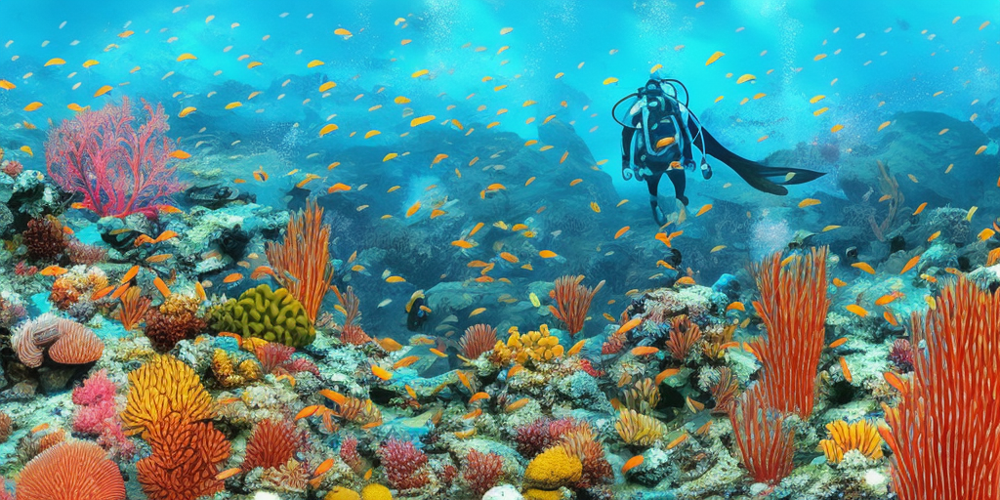

Reflecting on Foundations
Bienvenid@s de vuelta, and thanks for coming back to this new post!
I have to commend the DevAcademy team for their labour in creating this program. It was a scary thing looming in the horizon a month ago. Now it is one of my favourite reasons to get up every morning. It has been a winding and strange road, but that is what this post is about. We are swapping fans for fins on this one, as it is all about swimming. Get your diving gear and let's head out, then.
I have been constantly reminded, in the past month, of the heights I can reach when putting all my faith in achieving something I want. It hasn't meant it is simple or easy, it just means that I know I want it and I know nothing can stop me from getting it. Honestly, in this journey, it has been a lot more about what are the limits I am creating with my beliefs, and so much less about my ability (or lack thereof ) to do what I set out to do. There are so many streams of evidence that support an image of myself as someone who overcomes, who can twist and turn and transform themselves to transcend any obstacles; the facts are there and have been there for as long as I can remember. The only times this has proven to be otherwise are those where I believed, I chose to believe, the opposite was true. Like a lobster's shell, all these self-imposed limitations fall away when my willingness to grow has been greater than my fear of failure, or of succeeding and hating the success.
All of this has come to the surface like pieces of some old galleon's wreckage, carrying treasures and
skeletons in equal amounts. That shell, that ego, protects me in my growth process, but becomes an impediment
in embracing change and evolution. It says: "You can't go deeper, this diving suit is not meant to withstand
further depths". But then, how many times have I shrugged it off and lived to tell the story? How many
wonderful treasures have I found by going deeper into my well of wonders?
However scary it may seem, I have found that there is always a door at the end of the hallway, and on the
other side, there is a greater, happier and more loving version of me.

So, what is the purpose of learning programming and becoming a Full Stack Web Developer? Sure, I want a stable source of income and a job that challenges me and makes me feel like I am using my abilities to the fullest extent, but why? Looking at my country's recent history, there are many creative ways to go about this, some of them quite unique and destructive, why not choose one of those? Why not take the easy road and make a living off of other people's pain and misery, exploit their needs (real or manufactured) and weaknesses, flip a few houses, make a quick buck?
I do not want to see more people needlessly suffering in my life, I want to know that I am doing something to contribute to the betterment of my community. It is my purpose everyday to know that I am working to create something kind and loving for myself and those around me to enjoy. In the region I inhabit there is a clear line connecting our every movement and choice to the environment that holds us; our consumption habits, the way we occupy and utilise the land, how we treat our waterways, reflects in every aspect of our lives. Wether or not we are able to find joy in the gifts that surround us on every side depends fundamentally on the relationship we build with them. Being aware of the causes and consequences of our actions means survival for many of us and it can also mean fulfillment, contentment and happiness if we really commit to giving our best.
Isn't this the same for everything we learn and every line of code we write? If it doesn't serve our higher purpose, our prime directive, why do we do any of this? These are the gears that move us, the strength that drives us. This is what is pumping in our veins. It is more than worth to pay attention and give devotion to the air that fills our lungs with our first breath every morning, and these values, this connection to everyone and everything is it.
It shouldn’t surprise me, although it does, how neccessary these convictions are in an industry like Tech. Some of the tools being created by the people we aspire to work side by side with have the potential to impact millions of beings (not just human) in our planet. Taking social media for a quick spin as an example, a whole generation has now grown up knowing what it feels like to be instantly connected to the whole planet with the touch of a screen, and it all started with some college kids making a social connection website. Now this same technology has managed to boost those who have learnt how to work it to the top of the income ladder, while those slow to adopt them are at a disadvantage unheard of before the turn of the past century. It isn't just Tech that needs to connect to the core values that drive us to doing better by one another, but I believe we are very lucky that this is the case for us. After the stumbles experienced in the preceding decades, it is clear now that we need to thread a better path, and we need to do it from the core.
And what a task this can prove to be! Raised to compete as individuals, to race to the top disregarding the consequences, in a culture that enshrined the ruthless and ridiculed the vulnerable; who takes the first step towards empathy and love? With voices all around saying compassion is a weakness, the toughest step is always the first. Admitting a mistake, asking for help, surrendering to our fallibility, letting go of our pride and coming out of our shells is the definition of horror in the 21st century. With people being cancelled and dragged all over social media for making a mistake, the stakes of vulnerability seem too high. And yet, having taken the first step, everything seems so much lighter, no longer an existential threat, a little bit of a joke. The toughest thing for me, without a doubt, has been letting go of that belief system that poisoned me with fear, claiming to have my best interests at heart.
I am glad DevAcademy takes the development of the self as seriously as the development of the tech. And I really don't feel like I have to ask myself why; every day I am feeling and living the reasons why this should be so, for I am happy to be doing what I am doing. Happier even, than when I complete a working line of code, because at every moment I am reminded of the reasons why I do it. When I see my cohort mates step up and help one another, when I look away from the screen and see my friends and my wife looking at me with pride and hope in their eyes, when I am held with love and compassion by the facilitators that love doing what they do. The evidence is right there, and it’s that scary thing looming in the horizon that now has turned into a bright light shining every morning.